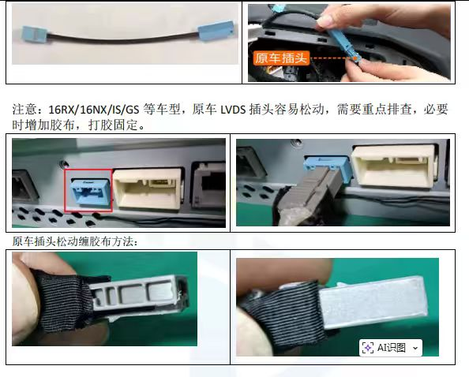
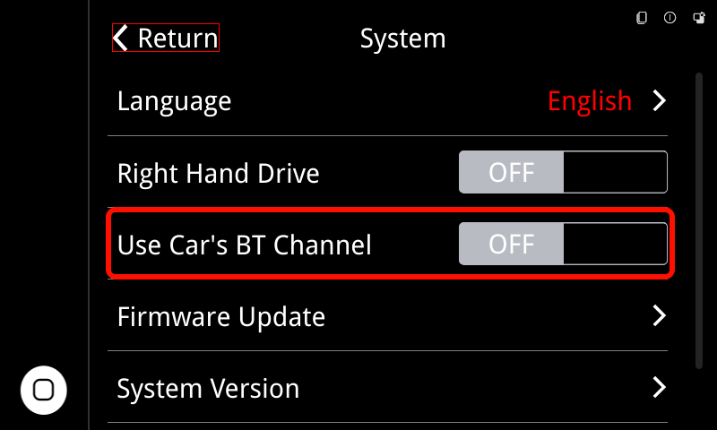
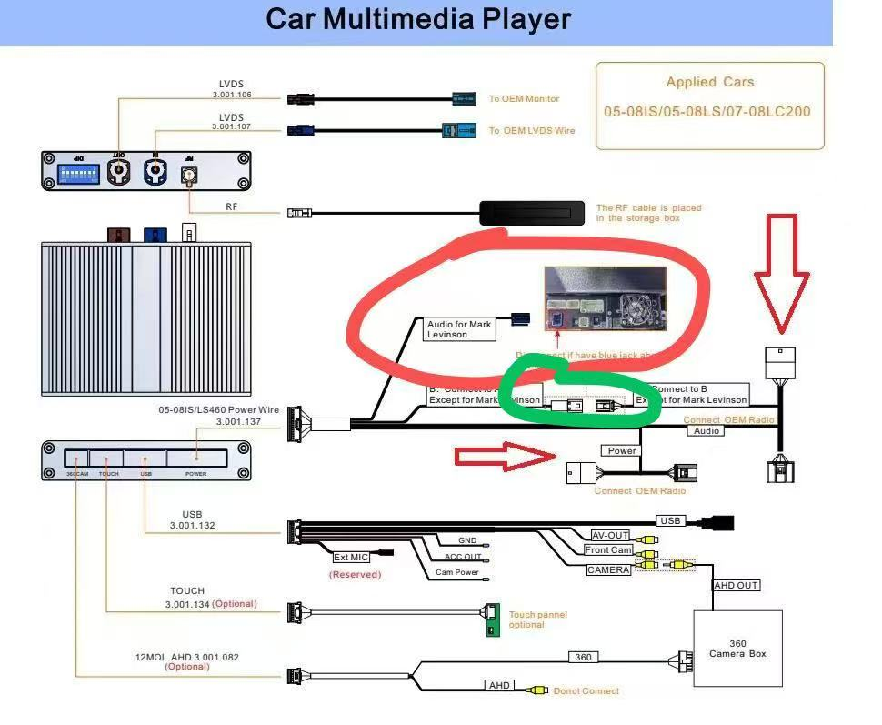

🔧 BNR售后问题汇总¶
1️⃣ 常见问题¶
1.1 新款雷克萨斯安卓大屏密码¶
高级设置密码
7776
2️⃣ 显示问题¶
2.1 无法连接CarPlay¶
展开查看解决方法
现象： CarPlay无法正常启动，但蓝牙已连接
排查步骤：
- 检查手机 Wi-Fi 是否连接盒子热点，如已连接请忽略并断开
- 检查盒子天线是否连接正常
- 删除手机与原车蓝牙配对记录，同时删除车机中的手机记录
- 在手机中忽略盒子蓝牙并重启手机
- 熄火等待1分钟后重新启动车辆，在盒子界面重新搜索连接
解决方法： 重新完成蓝牙 + Wi-Fi 配对流程
2.2 CarPlay断连¶
展开查看解决方法
- 在设置-系统-系统版本拍一下图片看看
- 查看天线的位置，不要靠近金属
- 更改Wi-Fi信道试试（setup -> wifi -> channel -> xx，然后重启）
- 看下客户手机IOS系统是多少，更新到最新系统看下
- 也可以尝试USB有线连接，看下情况
2.3 原车系统黑屏¶
展开查看解决方法
检查一下原车的LVDS接线

2.4 CarPlay双图层问题¶
展开查看解决方法
出现问题车型： LS 2009 09GXSI
解决方法： 拨码1 7 ON改为1 6 7 ON，改完拨码后拔插一下电源线等10秒后再启动
3️⃣ 音频问题¶
3.1 没有声音¶
展开查看解决方法
现象： CarPlay、Android Auto播放没有声音
排查步骤：
-
确认发声方式，使用的是AUX通道还是原车蓝牙通道
-
如果是AUX通道，确认设置->系统->“使用原车蓝牙通道"这个选项是关闭的；如果是原车蓝牙通道，这个选项就要打开

-
如果使用的AUX通道，请确认手机没有和原车系统的蓝牙连接，如果有的话需要断开连接（原车系统和手机中的蓝牙设备都要删除）
-
如果使用的是原车蓝牙通道，请参考以下步骤进行设置
- 原车系统中删除已连接的蓝牙设备
- Linux系统设置中打开蓝牙通道设置项
- 先连接carplay
- 再连接原车蓝牙
-
方向盘按键设置模式（Mode）设为蓝牙（Bluetooth）
-
如果还是没有声音，请检查接线
- 马克莱文森音响：只接红圈蓝色插头
- 非马克莱文森：绿色对插，蓝色不接

3.2 有杂（噪）音¶
展开查看解决方法
电子产品一般都有底噪，建议使用音画分离，连接原车蓝牙发声
如果原车蓝牙没有播放音乐功能只能通话，只能使用AUX通道，请参考2-1第5点检查接线情况
3.3 打电话有回声¶
展开查看解决方法
- 进行一次回声校准
- 使用原车蓝牙通道
4️⃣ 操作问题¶
4.1 方控按键不工作（05ISSI）¶
展开查看解决方法
检查一下收音机后面的这个接线

4.2 屏幕触控反应慢、无法滑动¶
展开查看解决方法
- 老款车型都是这样，需要用力点击触摸操作
- 有些车型屏幕较老，无法滑动操作，需要用力点按底部小圆点切换，滚动条同理